Todo lo que necesitas saber si estás de visita o acabas de llegar al pueblo alfarero más famoso de Chile. Servicios, emergencias, estacionamientos y mucho más.
Filtra lugares, calcula distancias y sigue una ruta sugerida
📍 Activa tu ubicación o haz clic en un punto de partida en el mapa para calcular distancias
🐷 💎 PremiumConoce El Chancho alcancía de greda más grande del mundo Ver página →Plano turístico oficial con el directorio numerado de talleres de artesanos.
Vista ampliada con leyenda, estilos de mapa, compartir lugares y más
La ruta perfecta para aprovechar tu día en Pomaire
Itinerario sugerido por la Oficina de Turismo · Municipalidad de Melipilla · Official tourist route
Nacido del esfuerzo de Romina y Fabio por la cocina tradicional. Tras siete años abrieron un segundo local y hoy es un referente de los sabores típicos de Pomaire.
Espacio turístico-cultural dedicado a preservar el oficio de la greda. Ofrece demostraciones en vivo, talleres con artesanos pomairinos y un recorrido por todo el proceso, desde la extracción hasta el horno.
Más de 30 años de tradición. Don Víctor Larraín transformó la antigua casona de adobe familiar en un referente gastronómico, cuna de la empanada más grande del mundo y de tres generaciones de cocina criolla.
Pequeño y encantador vivero que combina lo rural, lo botánico y lo artesanal. Ideal para una pausa tranquila tras recorrer talleres y restaurantes, y para llevarse un recuerdo vivo de Pomaire.
Última vuelta por los puestos antes de partir. Muchos artesanos hacen descuentos al final del día. ¡Buen viaje!
Condiciones actuales para planificar tu visita
Datos en tiempo real · Open-Meteo · Coordenadas Pomaire
Imágenes del pueblo alfarero y sus tradiciones
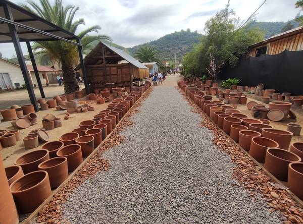
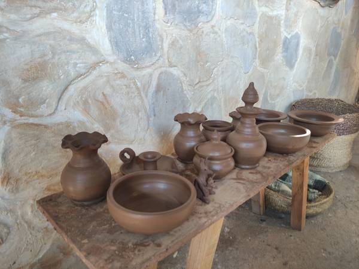
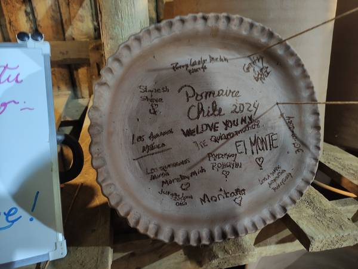
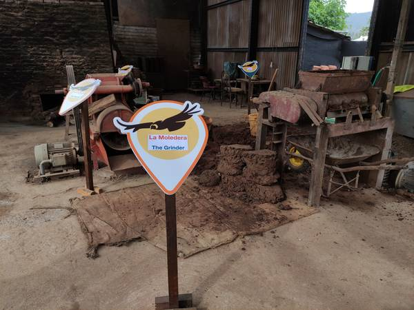
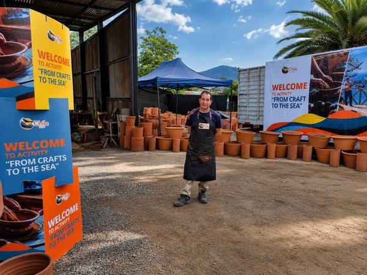
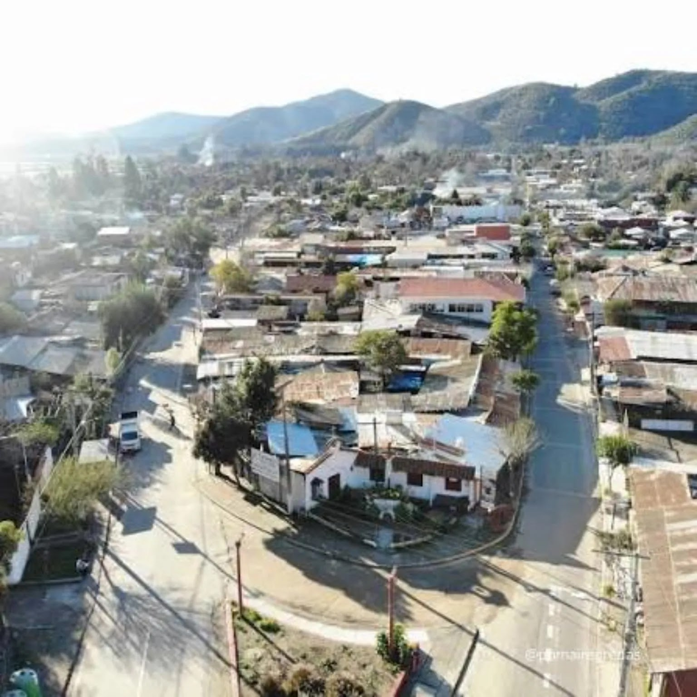
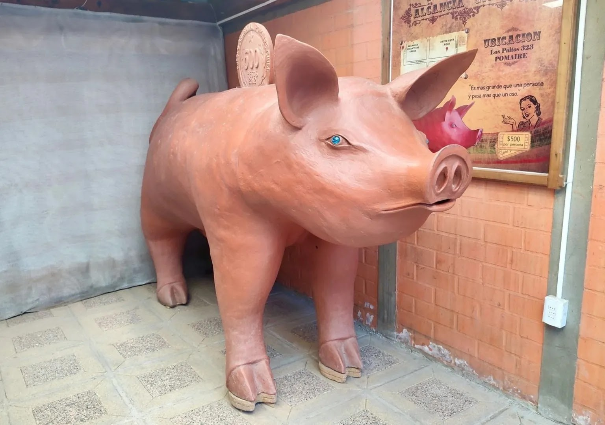
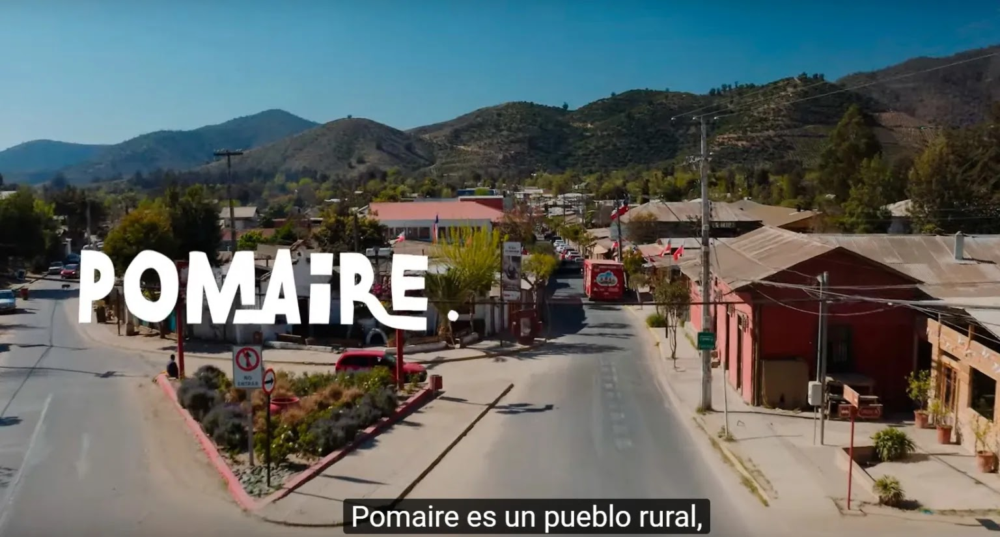
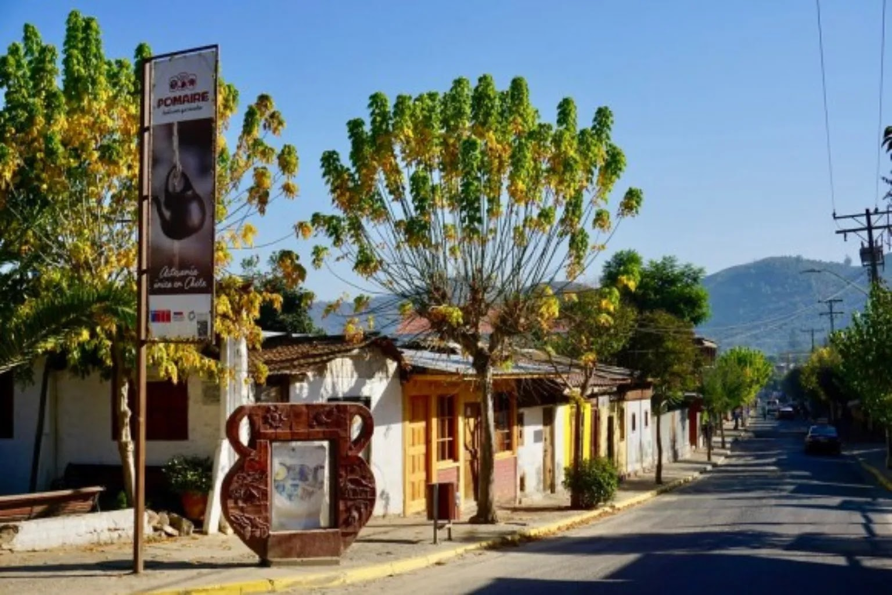
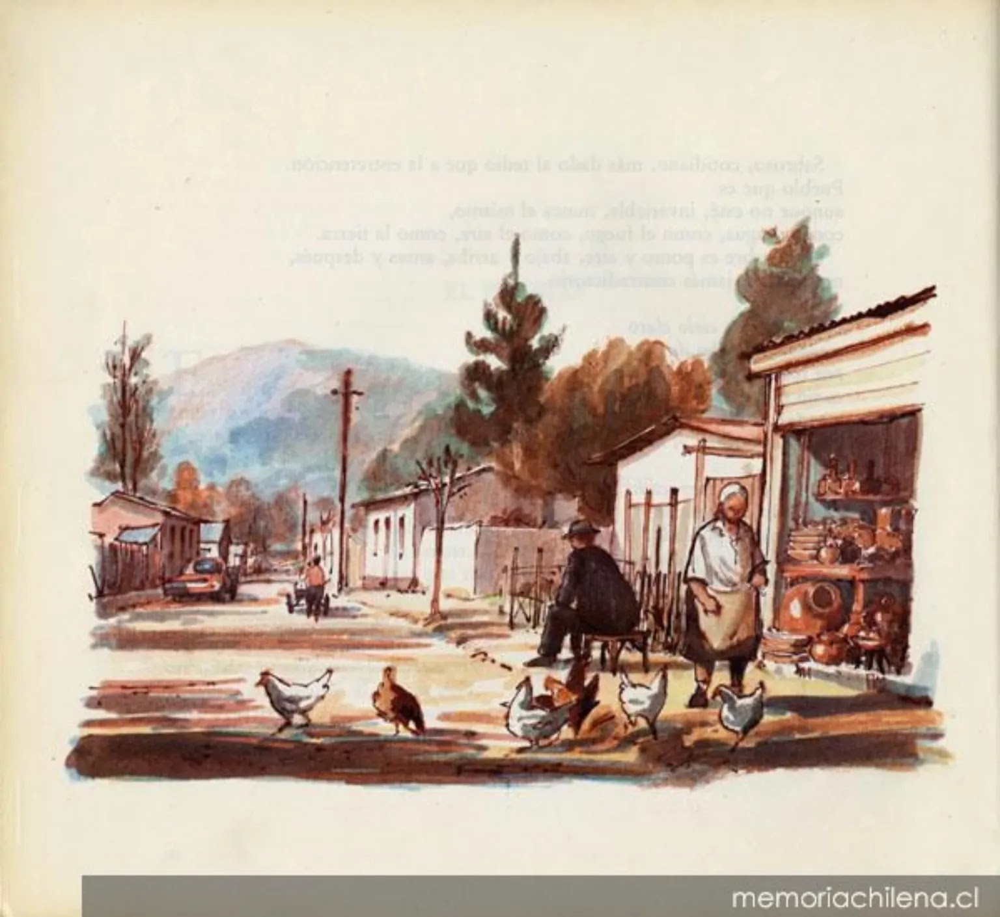
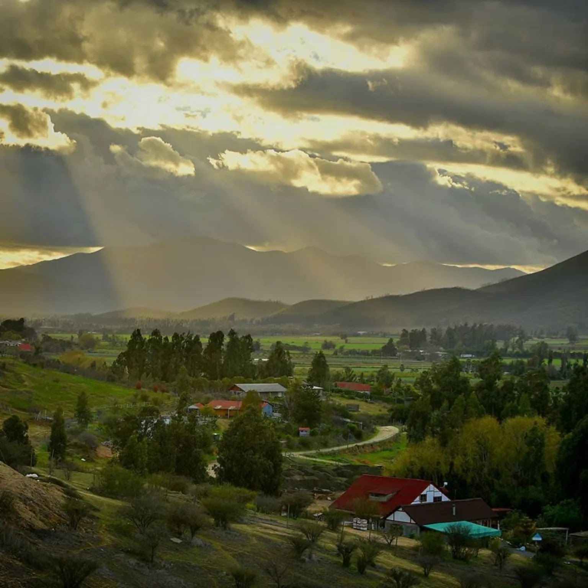
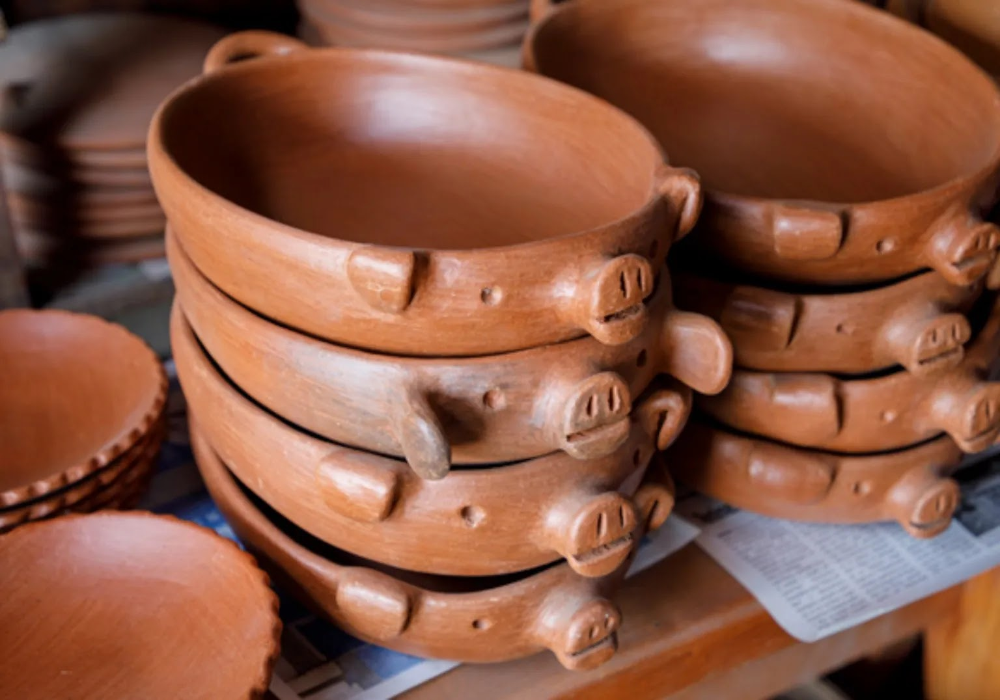
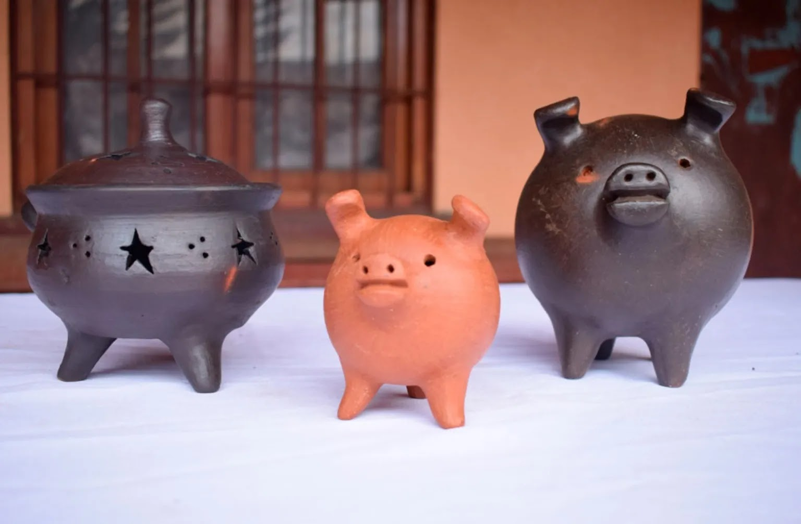
📷 ¿Visitaste Pomaire? Comparte tus fotos etiquetando #Pomaire360
Festividades, ferias y celebraciones en Pomaire
Mayor afluencia de turistas nacionales. Llegar temprano es clave. Los artesanos tienen más stock y variedad.
Alta demandaFestividad religiosa patronal de Pomaire. Procesión, actividades culturales y gastronomía especial en la plaza.
Fiesta patronal18 de septiembre — ambiente de fondas, chicha artesanal, cueca y artesanía festiva. Una de las mejores épocas para visitar.
Fiestas patriasArtesanos presentan piezas especiales de temporada. Nacimientos en greda, adornos y regalos únicos hechos a mano.
NavidadPomaire es una localidad alfarera ubicada en la comuna de Melipilla, Región Metropolitana de Chile, a solo 50 km al suroeste de Santiago. Conocido también como el pueblo de la greda, Pomaire es el destino turístico ideal para quienes buscan artesanía chilena, gastronomía típica y una experiencia cultural auténtica a menos de una hora de la capital.
La tradición alfarera de Pomaire tiene más de 300 años de historia. Los artesanos del pueblo trabajan la greda (arcilla roja) de forma artesanal, creando piezas únicas como ollas, cazuelas, jarros, tinajas, maceteros y el icónico chanchito alcancía de greda, símbolo de buena suerte en Chile. Visitar los talleres de alfarería es la actividad principal del pueblo, donde puedes ver a los maestros alfareros trabajando en el torno y comprar directamente.
En gastronomía, Pomaire es famoso por sus empanadas gigantes horneadas en horno de barro, la cazuela de vacuno en olla de greda, el pastel de choclo, las humitas y la chicha artesanal. Hay más de 20 restaurantes y picadas donde disfrutar de la cocina tradicional chilena.
Para llegar a Pomaire desde Santiago, toma la Autopista del Sol (Ruta 78), salida kilómetro 51. También puedes ir en bus desde el Terminal San Borja hasta Melipilla y luego tomar locomoción local. Pomaire cuenta con estacionamientos, servicios de salud (CESFAM), Carabineros, Bomberos y comercio local.
Pomaire 360 es la guía gratuita más completa para planificar tu visita o informarte sobre los servicios del pueblo. Información actualizada de alojamientos, ruta del vino y la chicha, mapa interactivo, eventos, transporte público y emergencias.
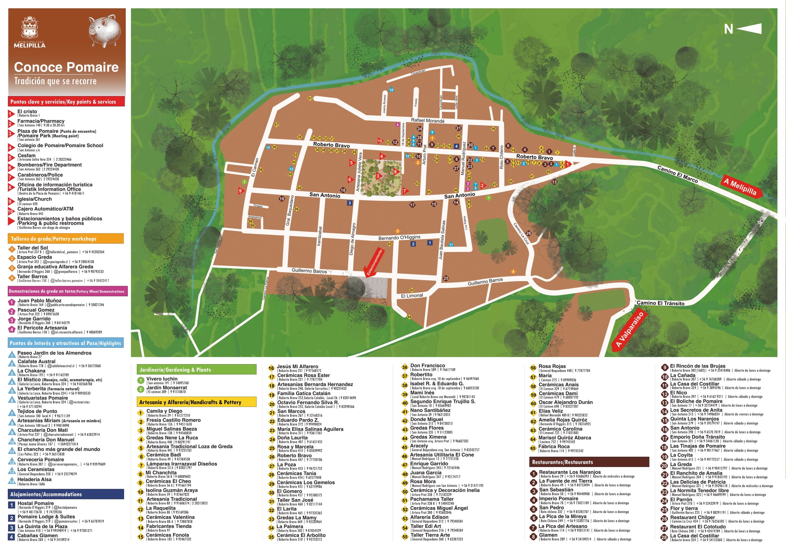
{kind=link}